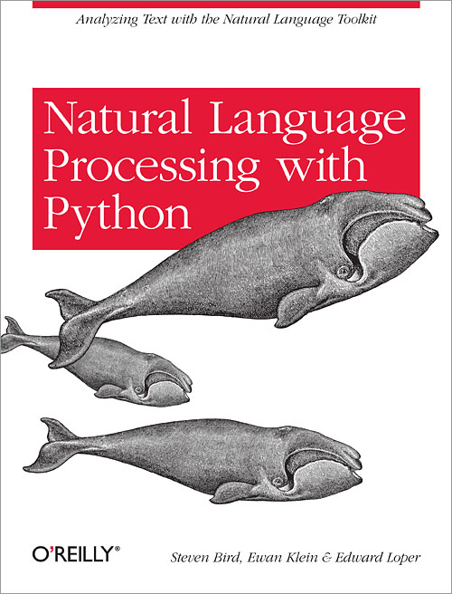
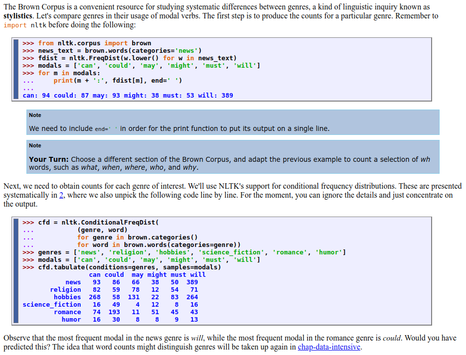
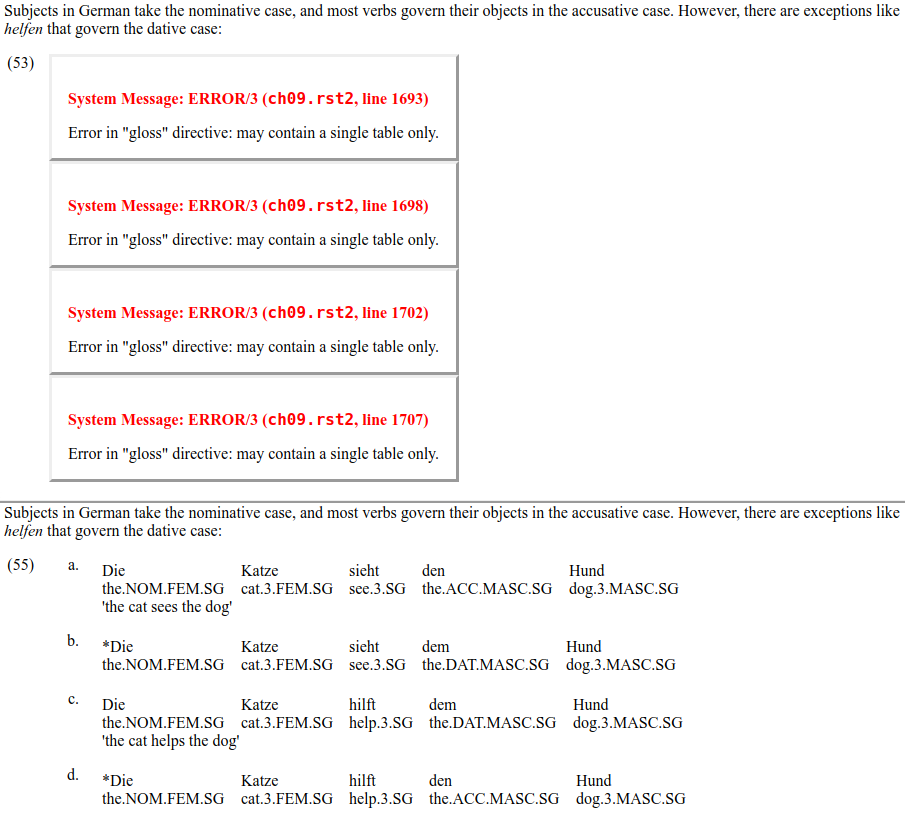

While between projects, I decided to brush up on some of the material in the nltk textbook Natural Language Processing with Python by Bird, Klein, and Loper. Overall, I have found it a really useful resource, and I wanted to share some perspectives I had on it as a learner (especially since most of my interaction with pedagogical texts over the last few years has been as a teacher). As a free text, it is an excellent resource, but I do have a few criticisms to voice and some words of advice to anybody looking to use it as a way of learning the nltk.
Natural Language Processing with Python, which I will just call the nltk book for short, is a free, online textbook that introduces natural language processing (nlp) alongside the Natural Language Toolkit (nltk), a set of ibraries and resources for processing natural language data in Python. The version I review here, according to the preface was released in September 2019.
The authors state that ‘[t]his is a book about Natural Language Processing’, with the goal of ‘provid[ing] a highly accessible introduction to the field of nlp’. They introduce nlp concepts and techniques using the nltk, which, not coincidentally, the authors also created. The nltk provides a relatively easy-to-use platform for working with natural language data in Python. It provides interfaces for several text corpora (tagged and untagged) and libraries for common nlp tasks, including classification, tokenization, tagging, and more. It is free and open-source, and it is available on Linux, Windows, and macOS.
As such, the book is intended to function both as an introduction to nlp and as an introduction to the nltk; the authors also mention that the book will teach programming to those who have not already learned it. They emphasize, too, that the book is meant to be a practical introduction in which the reader will learn by example; it is not intended as a reference work.
I should also note that there are two editions of this book. The first edition was published by O'Reilly, though the full contents is also available on the nltk website. This edition was published in 2009 and assumes the now unsupported Python 2. The current edition assumes the now current Python 3, and this is the version of the book that I worked through. Unfortunately, there appear to be no plans to publish a printed version of this edition (I'd like it for my bookshelf!).
The book covers a range of basic topics related to work in nlp. The first chapter covers some basics of corpus linguistics (including concordances, dispersion plots, counting distinct vocabulary, and some basic descriptive statistics), an overview of problems in natural language understanding, as well as some basics of coding in Python. Subsequent chapters are generally center around a single topic, with earlier chapters introducing related Python concepts and data structures as well. Chapter 2 focuses on accessing corpora provided by the nltk. Chapter 3 turns to processing raw text from other sources to make it suitable to nlp applications (including the basics of getting text from the web) as well as a long (but useful!) discussion of regular expressions. Chapter 4 takes a break from explicitly working on nlp tasks to discuss scripting in Python. Chapter 5 introduces automatic tagging, and Chapter 6 discusses how to automatically classify entire texts using features of that text.
Chapters 7, 8, and 9 turn to issues that are more syntactic in nature. Chapter 7 focuses on chunking, segmenting multi-token sequences with the goal of extracting information about their relationships. Chapters 8 and 9 focus on identifying and parsing syntactic structures, with the former chapter focusing on the basics of traditional context-free grammars (cfgs) and the latter focusing on feature-based cfgs.For the linguists, these are the sorts of unification-based grammars found in approaches like gpsg and hpsg Chapter 10 introduces natural language understanding (nlu), necessitating an introduction to propositional and first-order logic (as well as cameos from sql and discourse representation theory). The final contentful chapter, Chapter 11, focuses on compiling and managing corpus data.
The authors state that the book is intended for ‘a diverse range of people who want to learn how to write programs that analyze written language, regardless of previous programming experience’, including those who are new to programming or Python or those who are already familiar with Python but want to learn basic nlp methodology. Thus, the book assumes an introductory to intermediate familiarity with computer science concepts, though personally I suspect somebody who has never coded anything may have trouble getting started with just the discussion provided in the book – the book assumes you already have Python installed and does not, e.g., seem to explain how to run a script from from the command line (at least not anywhere I could find). If you're totally new to coding, it would probably be useful to have a more knowledgeable friend or colleague walk you through some of the basics before you get started with this book's content.
A nice touch in the preface is a section for instructors offering suggestions how to structure courses for different kinds of students (linguistics vs. engineering) around the chapters in the book. If you are looking to teach a course around this book, this is obviously useful, but I found this helpful even coming at this from a self-study perspective as it signaled to me ahead of time what parts of the text I would be more likely to spend more time on as a linguist. Speaking of which…
Though it is not typical to include information about the reviewer in a(n academic) book review, I think it is helpful to know where I am coming from, as my experience as a linguist makes my experience perhaps different from, say, a computer scientist. I have a PhD in (theoretical) linguistics and taught linguistics at the undergraduate and graduate levels, so thinking about language systematically and as an object of analysis is practically second nature to me. When starting this book, I already had some basic familiarity with Python and its data structures, having done Codecademy's online Python course and having worked through most of Zed Shaw's Learn Python the Hard WayFor what it's worth, Shaw's book should be called Learn Python the Tedious Way. I do not recommend it. Maybe I'll write about why someday., and as a Linux user I have a lot of experience at the command line and writing scripts, but I had no significant recent experience doing nlp work, and I by no means a computer scientist. Consequently, I don't feel comfortable rating how much or how well this book teaches nlp techniques or concepts – I'm not (yet) an expert in this area and so cannot provide an expert opinion. My review, therefore, comes from the position of a linguist, an intermediate coder, and as somebody self-teaching nlp techniques.
Now I turn to the content of the text, though I treat the exercises separately in a section below. Overall,The main thing I hadn't seen before was list comprehensions, which weren't covered in anything I had worked through previously. List comprehensions are great and I'm glad the nltk book spends time on them. I found the content to be accessible to somebody with a basic but good understanding of Python syntax and prior knowledge of its data structures. In general, when I started, I was able to make my way through a single chapter, its examples, and most of the exercises in a little less than a week. This was a good pace for me, giving me enough time to digest each chapter's contents without getting burnt out.
The authors note in the preface that ‘[t]his book presents programming concepts in an unusual order’, but this was not obviously apparent to me as a linguist. Starting this book with a basic understanding of how to code in Python, the direction and development of the discussion felt natural. So far as I am able to tell, concepts are presented in a logical and thoughtful order, with each chapter building on concepts discussed in those preceding it. Individual chapters are also well-structured, though the content of earlier chapters is a bit more heterogeneous due to the dual need to teach both Python and nlp concepts. Early sections dedicated to Python can sometimes feel a bit like interpolations, though not necessarily excursuses.
I should add that the tone of the book never feels condescending or hand-holding (as some intro-level textbooks can in some fields).In keeping with this being an introductory text book, most of the discussion is geared toward the basics of nlp. Discussions, on the whole, are clear and straightforward. In general, this means that a lot of the gritty technical details of the code are left undiscussed, and a lot of theory is only presented at a basic or surface level, as the focus is to get the reader to accomplish nlp tasks as quickly as possible. I think this is the right way to go about it. As I worked through this book, I felt like I was constantly making progress and learning new things. The exercisesI discuss the exercises in more detail below. As a preview, the exercises usually match the chapter content pretty well. helped greatly with this feeling, as many of them require the reader to come away with a practical understanding of the task or the code to reach the right answer. As the authors state, this is meant to be a practical introduction. I believe they achieve that goal, and I think it is fine to leave some of the technical nitty-gritty aside to get there.
Occasionally, though, there are places where the discussion feels somewhat thin or incomplete. For example, Chapter 7 is nominally about extracting information from text – a topic of great importance to natural language understanding tasks. However, most of the chapter is dedicated to chunking text (an apparent prerequisite for certain information extraction tasks) before turning to recursion in linguistic structure (which would have better fit in the following chapter). This was one of the few chapters I came out of where I felt like I didn't have a good handle on what the workflow looked like beyond the absolute basics; there was not enough of an explanation of how to actually go about getting useful information from a text or how to work with or use that information.
In keeping with the book's goal of being a practical introduction, much of the discussion in each chapter centers around specific examples of how to accomplish various tasks using the tools provided by the nltk. These are usable examples of code, usually followed by the expected output of that code. There are also links to the scripts that the reader can download and run on their own system. The authors do a good job of breaking apart the code into logical chunks and explaining what each chunk does, which is helpful for people who are not yet used to reading code. Several chunks of code are followed by ‘Your Turn’ sections, inviting the reader to use and modify the script to see how things actually work, which provides some valuable experience editing code.
Example code from Chapter 2 demonstrating how to access the Brown Corpus and calculate the frequency of various words. As useful as these examples are, there is a problem where some code blocks and examples were not correctly rendered into html when the book was converted from its original format, resulting in blocks containing error messages. An example of this can be seen in the screenshot below:
The top image comes from Chapter 9 of the second edition and shows an error that occurs when rendering the book in browser. The bottom image is from the online version first edition and shows how this is supposed to look. These error messages can be found in several chapters, and it is somewhat surprising that the authors would not have corrected these easily visible errors before uploading the book. Fortunately, there is a work-around in that most (if not all) of the malfunctioning examples appear in the first edition of the book (though occasionally with different example numbers), as shown in the lower part of the above screenshots. This usually gives a good idea of what was supposed to appear, though be warned that (as mentioned above) the first version of the book was written with Python 2 in mind while the current edition assumes Python 3. This means that code given in the first edition may not run if used with an up-to-date Python installation.
As the authors note, the book is definitely not a reference work. It is not structured as one, and you are better off looking through the nltk documentation if you are looking for information about a specific library or function. That said, there is an index of terms with back-references, which is helpful if you want to see where a specific term is introduced or discussed. However, the book lacks a detailed contents section, and consequently it can sometimes be hard to find where certain ideas or topics were discussed rather than specific terms. Furthermore, the bibliography is surprisingly blank apart from the title (again, however, I found all the references I looked up in the first edition's bibliography). Both of these issues should be easy to remedy in future updates.
As long as you don't mind working a little harder, these usability issues should not be too detrimental; I don't think there was any missing content I wasn't able to recover somehow. Overall, I do not think these issues should discourage anybody from working through the book, though I suspect they might make using it as a course text book less appealing (or, at least, would require students to be cooperative or for the instructor to do some extra work). Hopefully the authors fix these issues in the future as that would make the book a much better and more polished resource.
There are lots of exercises at the end of each chapter, with a good amount of diversity in what they ask you to accomplish. Since I am the kind of person who learns by doing, this was, for me, one of the most appealing parts of the book and one of the things that helped me to learn the most. Exercises are divided into three categories of difficulty and are usually appropriately categorized. Most of them are relatively short and have a clear goal, which did a lot to make me feel like I was progressing at a good rate and learning how to deal with various kinds of problems. Even at my level of experience, I found I could at least make some headway with a lot of the difficult problems, though I'll admit that some of them did seem to need more coding experience than I had when I first worked through the book.
While the abundance of exercises is a clear strength, one of the weaknesses here is the lack of answers for those exercises. This is not always a hindrance: In many cases, it is pretty clear what a successful answer to a given exercise would have to look like based on whether the script you write gives the desired output. Additionally, providing an answer key could limit the utility of this book as a course text book.
However, given that this book is also intended for self-directed study, an answer key would be helpful for three reasons: 1) sometimes you (or your students) won't know how to solve the exercise, and having the answers available (either as a learner or a teacher) can be a useful tool for learning material that is not explicitly taught in the text; 2) it is not always clear what the exercises are asking for, and having an answer key would help elucidate what the authors intend the reader to learn from the exercise; and 3) inexperienced coders who might come up with their own solution would no doubt still benefit from seeing how other people solved the problem under discussion.
In this context, a parser is a function that takes a sentence and determines the underlying syntactic structure of that sentence.As a case in point, consider the (difficult) exercise given at the end of Chapter 8 (on syntactic parsing) that challenges the reader to develop their own left-corner parser. I'll freely admit that I didn't feel particularly confident taking a crack at this, and the discussion in the chapter doesn't touch on how one might go about doing this. The exercise instructs the reader to use the ParseI class (a class which does not appear to exist; I think this must refer to the ParserI class), but there is no previous reference to this. I think this is a place where the authors are subtly encouraging the reader to consult documentation beyond the text book, but this is nonetheless a case where having some sort of answer key would provide extraordinary insight into how to do tasks like this, since it is not provided elsewhere in the book.
There are also a few places where the exercises don't quite line up with chapter content. Another example from Chapter 8: There is a problem that asks the reader to ‘Compare the performance of the top-down, bottom-up, and left-corner parsers’
. However, the chapter, while discussing the theory behind left-corner parsing, does not introduce any left-corner parser that might be included with the nltk. There is one, but I had to look through the nltk documentation to find it.
These sorts of issues are more of the exception than the rule, though. Overall, the exercises are a real strength of the book and make a great addition to the content. If I may make a comparison to another free online textbook I worked with, I recently spent a few weeks reading Danielle Navarro's Learning Statistics with R. Like the nltk book, Navarro's book uses lots of examples. To Navarro's credit, she uses this book in her own course and I'm sure she has exercises to go along with it. I wish it were easier to use in self-directed study.I enjoyed it and found it clear and easy to read, but the lack of exercises made it much harder for me to gauge my progress as I went along. This made me appreciate the exercises in Natural Language Processing with Python even more than I did before.
In summary, if you are interested in teaching yourself nlp, Natural Language Processing with Python is a great place to start. It is not a perfect textbook, but as a free textbook it is an excellent resource and will get you coding from the start. The content is clear and presented logically and at a good pace, and the exercises are a great way to check and develop your understanding as you progress. That said, the book is probably not completely appropriate for somebody with absolutely no coding or scripting experience, some of the problems with the book itself will present usability issues to any reader, and the lack of an answer key for the exercises might leave some readers scratching their heads. The good news is that it costs nothing to try, which makes it a lot easier to look past these issues.
{kind=link}
{kind=link}